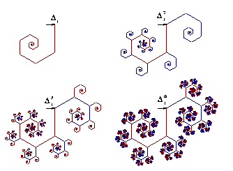
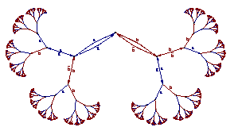
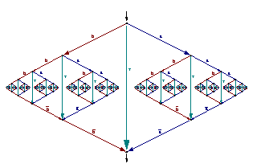
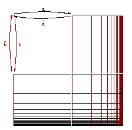

Nazim Boudeffa
Rue Vielle du Temple 75001 Paris
Tél. pro. 02.99.84.25.15
Tél. perso. 02.23.20.37.52
boudeffa@irisa.fr
Les transparents (à l'envers) : PS.GZ
I am studying families of infinite graphs
focusing on their behavior properties and their
traces.
The behavior properties of a graph are described with logical sentences
like monadic second order formulas.
Its traces are the languages obtained following paths between sets
of vertices in the graph.
Abstract :
The aim of this article is to make a link between the congruential
systems investigated by Conway and the infinite graphs theory.
We compare the graphs of congruential systems with a well known family
of infinite graphs: the regular graphs of finite degree
considered by Muller, Shupp and Courcelle.
We first consider consider congruential systems as word rewriting systems
to extract some subfamilies of congruential systems, the
p-q-congruential systems, representing the regular graphs of finite
degree.
We then prove the non regularity of the Collatz graph.
This paper was presented at the MFCS 2000 conference. You can download a postscript version or a pdf version with detailed proofs.
Un résumé en français présenté aux journées montoises d'informatique théorique est aussi accessible en ligne.
Abstract :
We study some simple graph transformations:
rational colouring, inverse morphism and product
by finite graph.
From model checking point of view, these transformations
preserve the decision of second order monadic logic.
From languages point of view they correspond to
rational transductions of the traces.
When a graph family is principal for these operators,
the generators of the family are its most "typical"
graphs while non generators define strictly weaker machines.
We show that some properties of pushdown graphs and other graph families
relies on these closure properties.
This paper was presented at the DLT 2002 conference. You can download a postscript version or a pdf version with detailed proofs.
| n-counter stack machines (weaker than pushdown machines). | pushdown machines. |
|  |  |
| one reversal pushdown machines. | two counter machines (or Petri nets). |
|  |  |

{kind=link}